How To Use The Automatic Data Entry
What is Automatic Data Entry
The Automatic Data Entry feature reads the Employee Everything Report (a report available through an information request) and puts the data from that report, into Klusterbox's database. From there, that information can be viewed, edited and used to generate reports and spreadsheets. The Automatic Data Entry feature only reads files with the extension "csv". If you have another type of file, such as a "pdf" file, you can run the PDF Converter to transform your pdf into a csv.
What To Expect
Once you get started, you will be asked to contribute input into the process. Since the
Employee Everything Report doesn't know which carriers are on the otdl and other list, you will have to contribute
that information. Another thing that the Employee Everything Report doesn't know is what are the routes on the
strings of floaters (carrier technicians). You will have to provide that information also. Don't worry if you don't
get all the details right, you can edit the carrier information using "edit" or the "Multi-Input" features once the
Automatic Data Entry program has finished running. In some cases, you might choose to run it again. This is safe to
do and will not cause any errors in the database.
The first time running the program will take more time, since
all the carriers are new to the database and Klusterbox will need more input. Once a carrier is in Klusterbox's
database, that carrier is remembered along with their information. You will only be prompted for input if Klusterbox
detects a change in that information.
Once you have gone through all the screens inputting information,
Klusterbox will ask you if you want to input the clock rings - inputting the clock rings will take a minute or so
since all the information from the Employee Everything Report is being read and gathered in the database. There
will be a progress bar - Please be patient.
What You Need
You will need:
1. An employee everything report in a csv or xls format. If you only have the employee
everything report in the pdf format, then you can use the PDF Converter it to create an employee everything
report in cvs format. Currently, the Automatic Data Entry only works with Employee Everything Reports
that are a week long.
2. The weekly schedule provides a list of the routes on each of the carrier technician strings.
3. The overtime desired list and the work assignment list. This provides a list of names of the carriers on
the otdl and the work assignment list. Any carriers not on one of those two list is on "no list."
Where to find the Automatic Data Enty
To get started, you select the "Automatic Data Entry" Option from the home page when the no date or station have been selected. If there is a date and station selected, you can either "reset" or select "Automatic Data Entry" from the "Automated" drop down menu.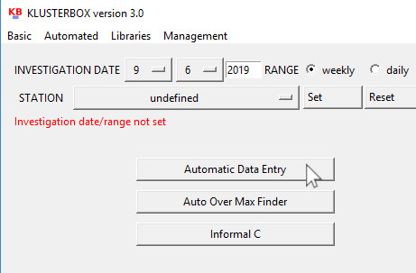
To select "Automatic Data Entry" from the drop down menu. First click on "Automated" and select the "Automatic Data Entry" option.
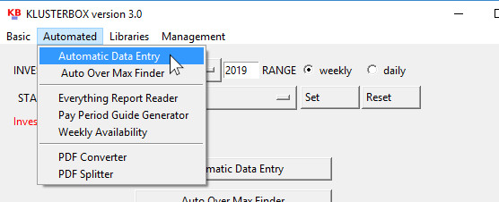
Once you open the Automatic Data Entry, you will immediately be prompted to select a file. Use the file dialog to navigate to the Employee Everything Report in csv or xls format that you requested from management. The file dialog only shows csv and xls files, so if you got the file in the wrong format, then it won’t show up when you navigate to the folder where you placed it.
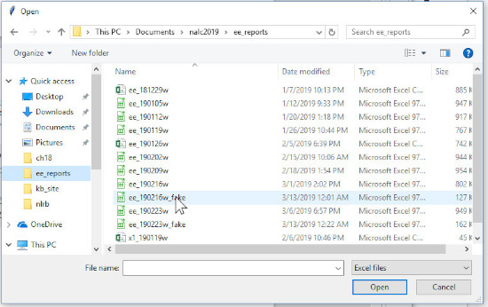
Since
there are csv and xls files that are not Employee Everything Reports,
if you select a file which is not an Employee Everything Report, you
will get an error message and then be returned back to the main
screen. If this happens, make sure that the file you have is indeed
an Employee Everything Report. You can open the report in notepad or a
spreadsheet program if you are in doubt. It should read, “TAC500R3
- Employee Everything Report” on the first line, followed by a
whole bunch of hard to read data.
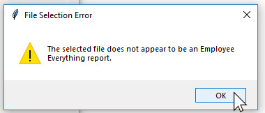
If
you don’t get the error message and instead get the Station
Pairing Screen, then you’ve got it made. That means that the
Automatic Data Entry can read the file that you selected and
you’re on the way to conducting your improper mandate
investigation in a faction of the time.
Step 1. Station Pairing
If the Automatic Data Entry does not recognize the name of the station in the Employee Everything Report then the first thing that you see is the Station Pairing screen. If the Automatic Data Entry does recognize the station, then you will not see the Station Pairing screen.
This screen couples the station as it appears in the Employee Everything Report AKA TACS (Time and Attendance Collection System) and the name you entered for your station when you first started Klusterbox or with the List of Stations command on the menu bar. You can use the name that comes from TACS, but usually the name is inelegant and hard to read. Moreover, if you have previously enter information into Klusterbox for prior weeks, then Klusterbox will not recognize that information from being from the same station. That could cause problems later. So try to match the station by pulling down the option menu under “Select Station:”. Then press OK. You can select ADD STATION to just use the name as it appears in TACS.
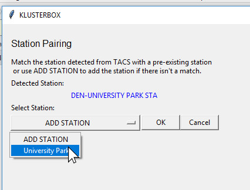
Once you make you selection you will be prompted with a message which informs you that the station as it known in TACS has been paired with the station name that you have selected and those two stations will be identified with each other from now on. You can just press the space bar to acknowledge this message and close it.
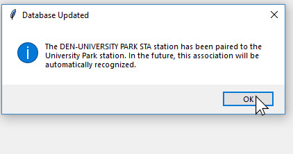
Step 2. Search for Name Matches #1
If the Automatic Data Entry sees names that it has not seen before it will display a list of those names. It is up to you to match the names to names from previous investigation or to select “NOT FOUND” if there is no match for the name. You can also select “DISCARD.” This will remove the name from any further consideration in the investigation process and the name will not be added to the carrier list.
This primary function of this screen is to facilitate matching names that might have been added manually during prior investigations. If you have not manually entered new carriers, then you will only have the options of “NOT FOUND” and “DISCARD.” In that case, you should select “NOT FOUND” for all the names you want included in the carrier list and press continue.
If there are possible matches for the name, you will see a number of possible names next to the option menu. If there is a match for the name, and you know that name to be the same person, then select it.
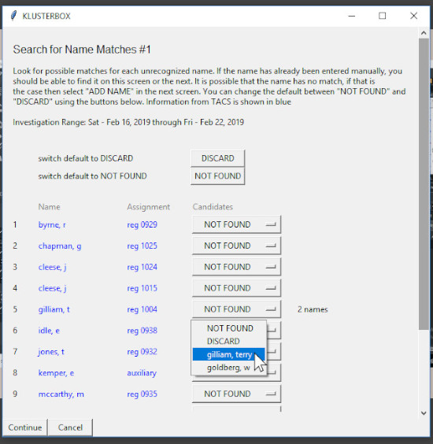 >
Step 3. Search for Name Matches #2
This screen does the same thing as the previous screen except it cast the net wider in looking for names to match. This screen will provided possible matches with carriers who are outside of the station you are investigating. This screen will also give you a second chance to DISCARD names.
If you do not see a match for a name and you do not want to DISCARD it, then select ADD NAME. ADD NAME is the default setting and will add the carrier into the carrier list for the investigation.
Step 4. Input New Carriers
If Automatic Data Entry sees names that it doesn’t have a current record for in the database and that you can’t match or haven’t discarded, then it will add them into Klusterbox as new carriers. The Automatic Data Entry should be able to identify the carrier’s ns day and route as long as the carrier is not a floater. If the carrier is a floater, then you will have to enter in the string in the route field. There is a special format that you have to use to enter in a string. If you mess up, you will get an error message, the screen will reload and you will have to start again.
Also, you will have to go down the list and specify who is on what list, i.e. otdl, wal or nl. “nl” means “no list”.
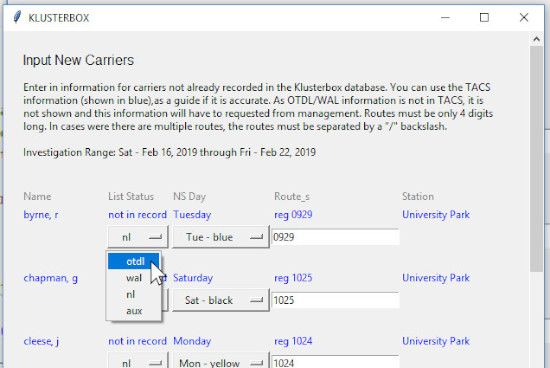
Duplicate Names
If you looked close at the screen shot for Step 2. you would have seen that two of the carriers have the same name. The program needs a special handling for cases like that because, in Klusterbox, the carrier’s name is a unique identifier. Klusterbox can not tell the difference between two carriers with the exact same name and would treat those carriers as the same person. To handle this problem (when it comes up) the Automatic Data Entry adds the employee id to the end of the carrier’s name when it sees a name that an other carrier already has.
If you don’t like this name treatment, don’t worry, you will be able to change it later by clicking the edit button next to the carrier’s name when you get back to the main screen. There you will have a chance to update the name to something that suits you better. Just make sure it different from the other similar name in the list of carriers.
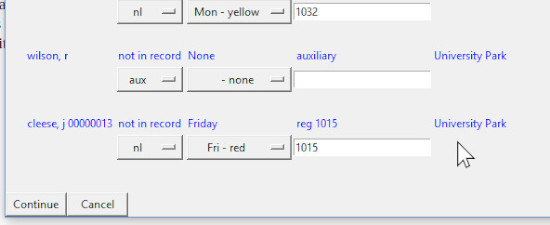
Step 5. Discrepancy Resolution
When the Automatic Data Entry sees that there is a
discrepancy with the information that it has coming in from the TACS
report that it is reading and the information previously entered into
Klusterbox either manually or via an earlier application of the Automatic Data Entry,
then the program will prompt you to confirm
or correct that discrepancy.
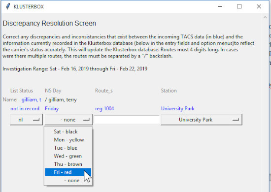
Step 6. Carriers No Longer At Station
If Automatic Data Entry sees that a carrier from a previous investigation is in the carrier list, but that carrier is not mentioned in the current investigation, it will notify you of the fact and give yo the option of placing that carrier out of station. The “out of station” option in the station option menu is a catch-all category. It can mean different things: the carrier has transferred to a different station, the carrier quit, the carrier retired, etc.
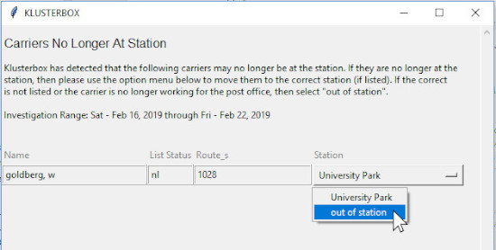
Step 7. Input Carrier Rings
Here’s the easy part. If you are ready to enter the clock rings, then press the “OK” when the message box ask if yo want to enter the clock rings. There are reasons why would might want to hold of, like making some changes to the carrier list which you didn’t make earlier. That’s okay. If you want to do it later or not do it all, then that up to you.
If you do elect to enter the clock rings, a progress bar will
appear. It will show you the Automatic Data Entry’s
progress on entering all those clock rings in the database. Once it
done, you will be directed back to the main screen which will be set
to the investigation range that you just investigated with the Automatic Data Entry.
From there you can open Report or generate a
spreadsheet to view the results of the investigation.
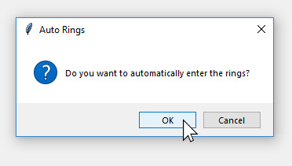